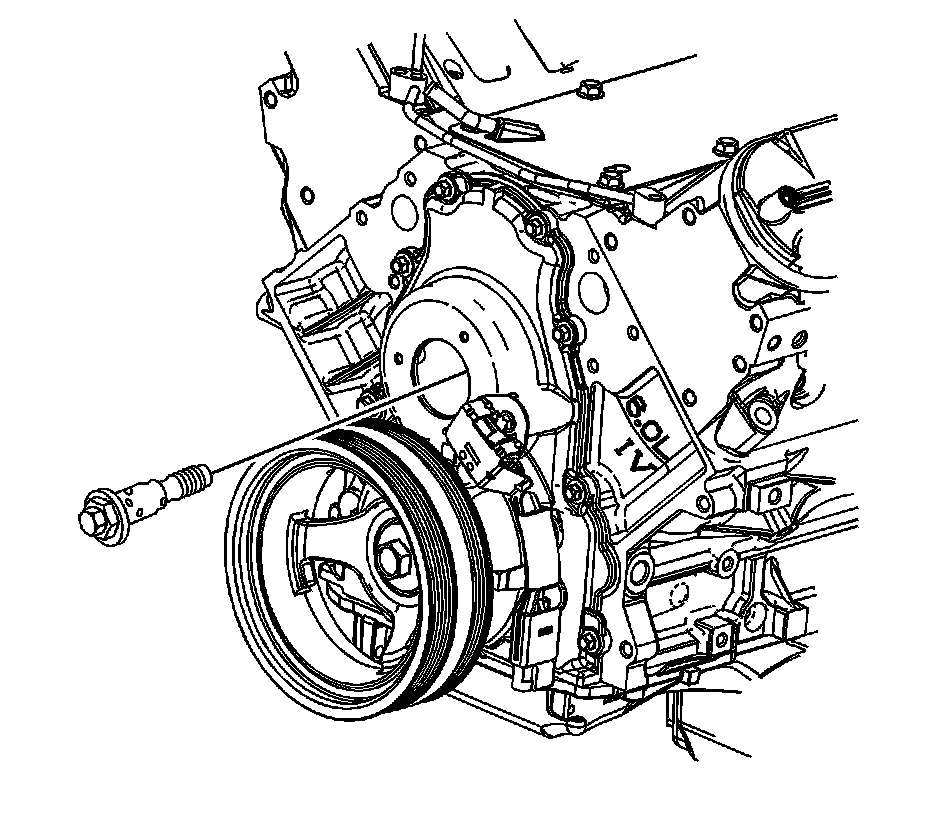

Variable Valve Timing Solenoid: Service and Repair
Camshaft Position Actuator Solenoid Valve Replacement
Tools Required
J 45059 Angle Meter
Removal Procedure

1. Remove the camshaft position (CMP) actuator magnet. Refer to Camshaft Position Actuator Magnet Replacement.
2. Remove and discard the CMP actuator solenoid valve.
Installation Procedure
1. Install the a NEW CMP actuator solenoid valve until snug.
With the CMP actuator properly positioned onto the camshaft, the CMP actuator solenoid valve can be threaded completely into the camshaft using light hand pressure. Tighten by hand until snug.
Notice: Refer to Fastener Notice.
2. Tighten the CMP actuator solenoid valve.
1. Tighten the solenoid valve a first pass to 65 N.m (48 lb ft).
2. Tighten the solenoid valve a final pass and additional 90 degrees using J 45059.
3. Install the CMP actuator magnet. Refer to Camshaft Position Actuator Magnet Replacement.